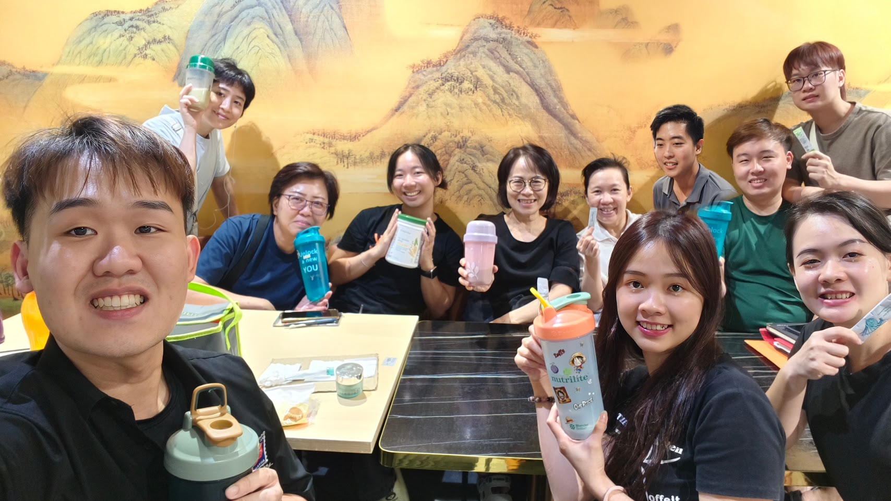

BUSINESS · A → B
从 A 路，走向 B 路。
把你的 A→B 故事从一张 slide 变成一个可以点击的 journey。

把你的 A→B 故事从一张 slide 变成一个可以点击的 journey。

不是一夜改变，而是把目标拆成可执行的下一步。
下一层可以把你 PPT 的 4×4 每一个格子做成真正可点击的互动卡片。
理解 A→B、产品、客户与商业框架。
学习、分享、服务、复盘。
把个人能力与团队协作持续建立起来。
Rich DeVos 与 Jay Van Andel 在美国创立 Amway。
Nutrilite 成为 Amway 核心品牌之一。
官方历史资料记录马来西亚于 1976 年开始运营。